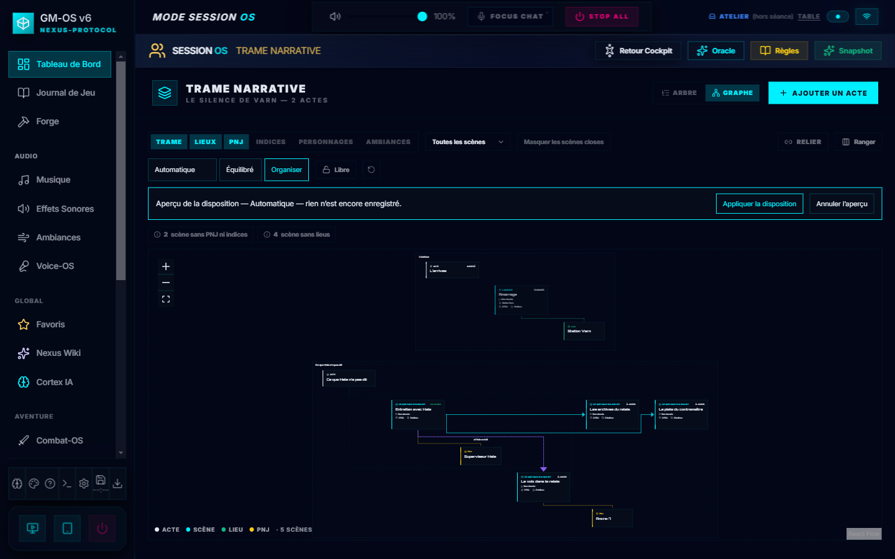
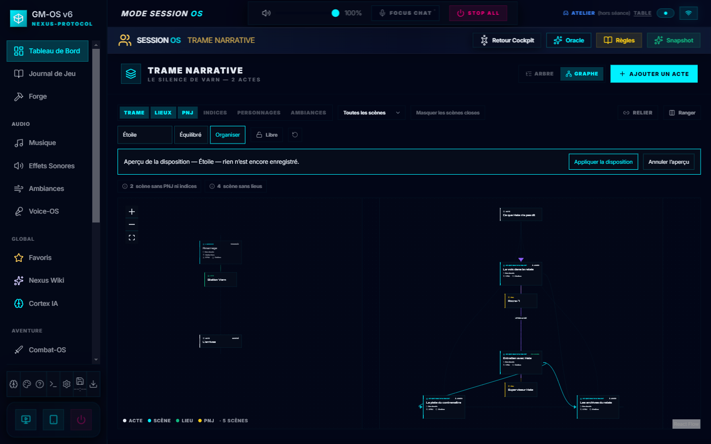
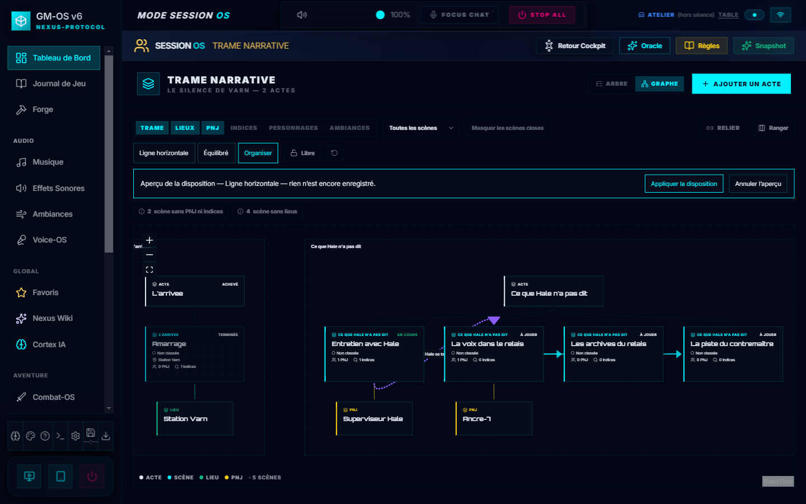
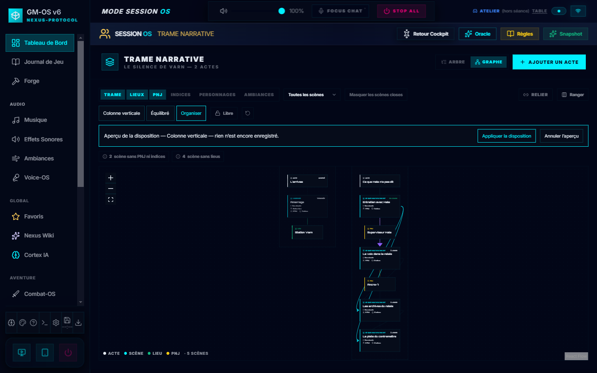
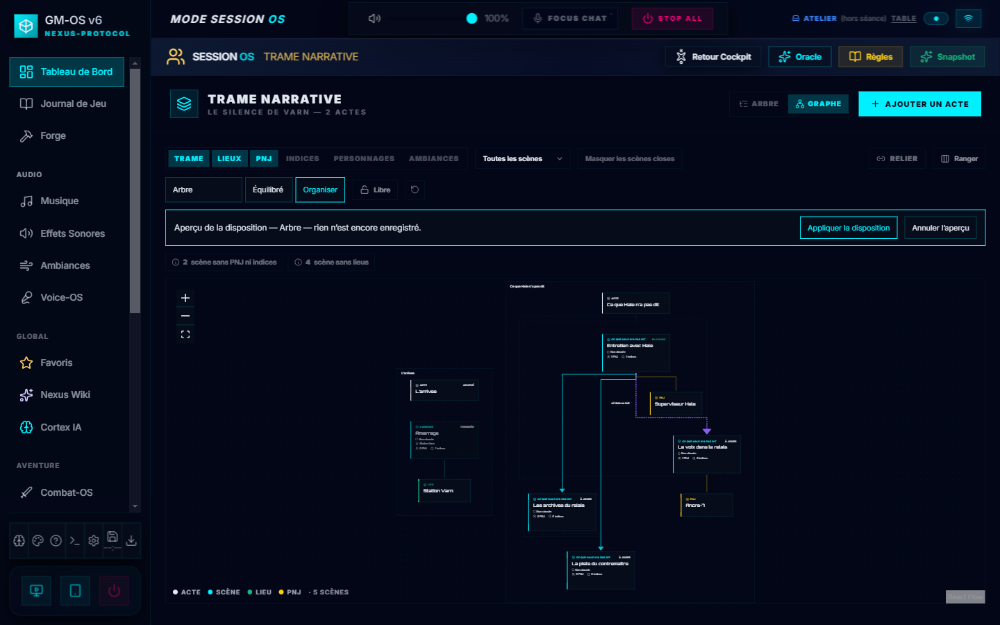
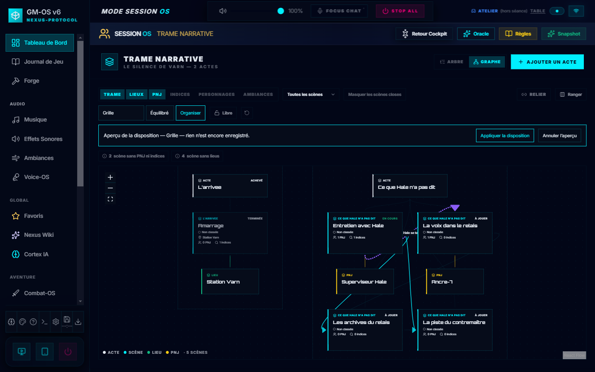

Choisir la forme du rangement
Dans Trame → Graphe, choisis une Disposition, puis l'espacement et Organiser. Compare les formes dans l'aperçu ; Appliquer la disposition conserve le résultat. Disposition précédente restaure l'arrangement remplacé, même après relance.
Étoile place la scène carrefour au centre, ou l'acte lorsqu'il n'y en a pas. Les lignes suivent l'ordre des scènes de chaque acte. La grille offre plusieurs rangées dès quatre scènes. Les annexes restent proches et les éléments partagés entre actes restent communs. Les couleurs, épaisseurs et côtés des liens sont conservés.
Captures du 07/10/2026 sur une campagne et un profil factices isolés. Réalisation · Contrôles · Galerie des cartes

Automatique — branches et orientation adaptées à la toile.

Étoile — enquête autour de la scène carrefour.

Ligne horizontale — scènes dans leur ordre.

Colonne verticale — scènes dans leur ordre.

Arbre — branches narratives et trajets à angles droits.

Grille — plusieurs rangées et colonnes.
900 pixels — menus repliés et aperçu cadré.